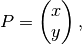
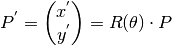

bladex.profilebase.ProfileBase.rotate¶
-
ProfileBase.rotate(rad_angle=None, deg_angle=None)[source]¶ 2D counter clockwise rotation about the origin of the Cartesian coordinate system.
The rotation matrix,
 , is used to perform rotation
in the 2D Euclidean space about the origin, which is – by default –
the leading edge. is defined by:
, is used to perform rotation
in the 2D Euclidean space about the origin, which is – by default –
the leading edge. is defined by:
Given the coordinates of point
 such that
such that
Then, the rotated coordinates will be:

If a standard right-handed Cartesian coordinate system is used, with the X-axis to the right and the Y-axis up, the rotation is counterclockwise. If a left-handed Cartesian coordinate system is used, with X-axis directed to the right and Y-axis directed down, is clockwise.
Parameters: Raises: ValueError – if both rad_angle and deg_angle are inserted, or if neither is inserted